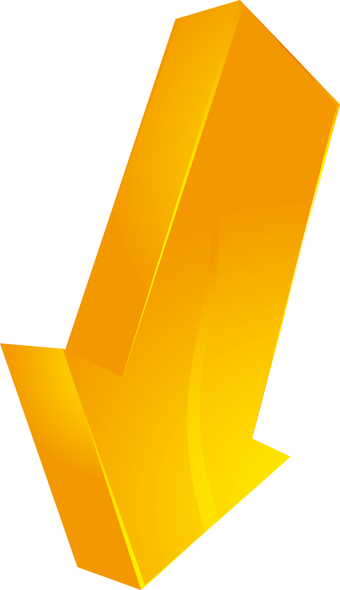
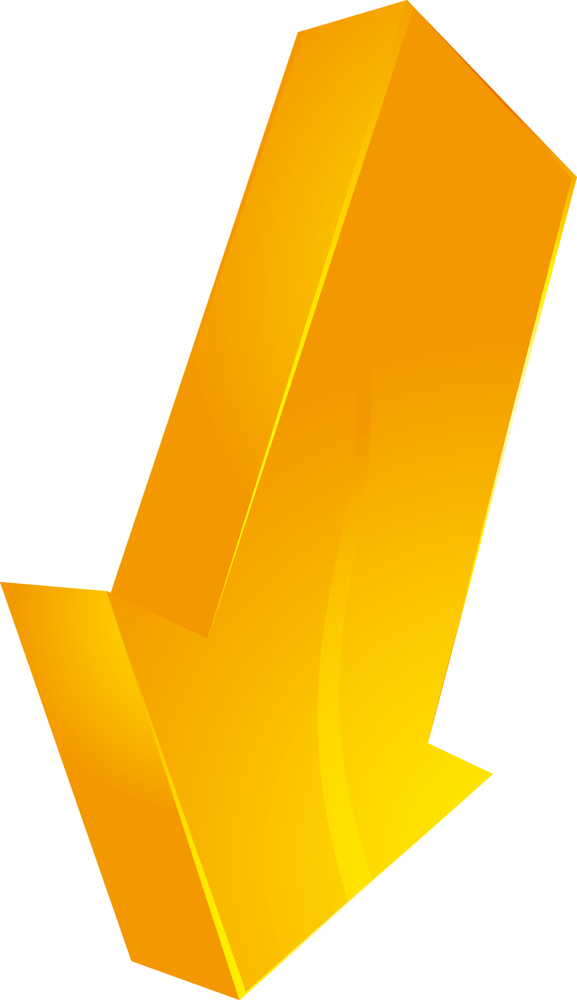

El laboratorio está situado en Suiza cerca a la frontera con Francia, entre la comuna de Saint-Genis-Pouilly (en el departamento de Ain) y la comuna de Meyrin (en el cantón de Ginebra).
Como instalación internacional que es, el CERN no está oficialmente bajo jurisdicción francesa ni suiza. Los estados miembros contribuyen conjunta y anualmente con 1 000 millones de CHF (aproximadamente 664 millones de euros o 1 000 millones de dólares)
 



Mapa interactivo
Haz clic en alguno de los botones para ver información sobre el detector.